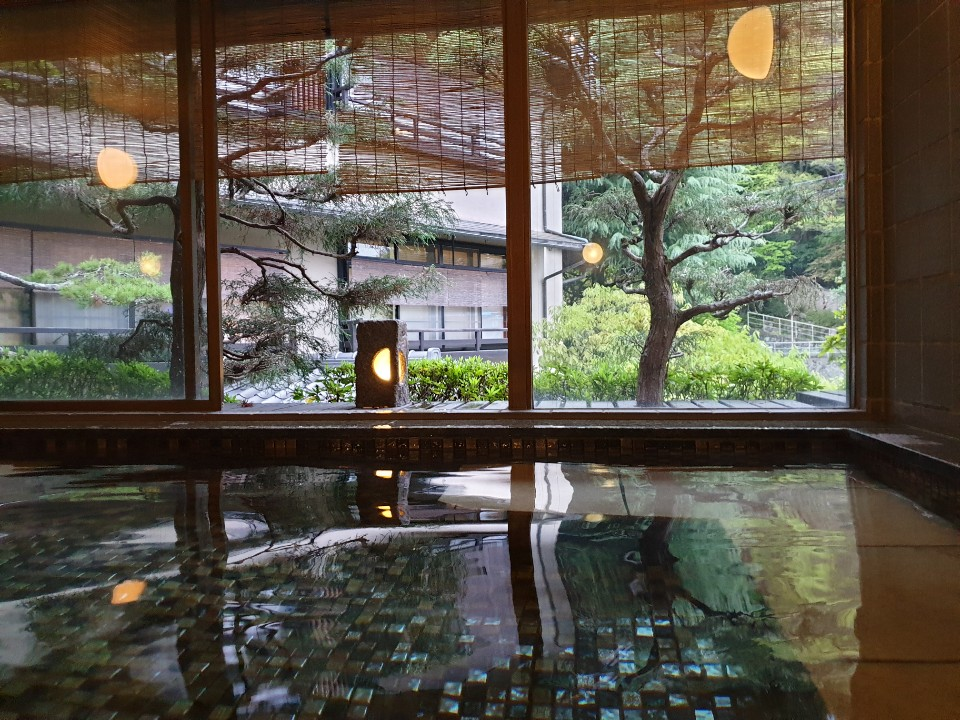
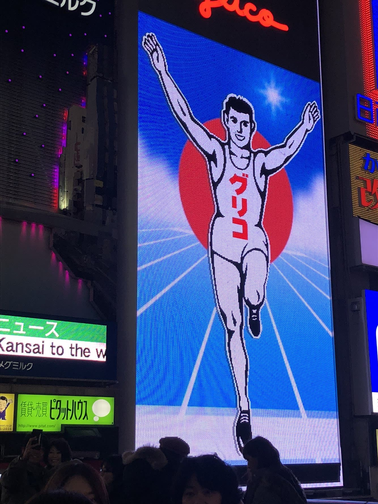
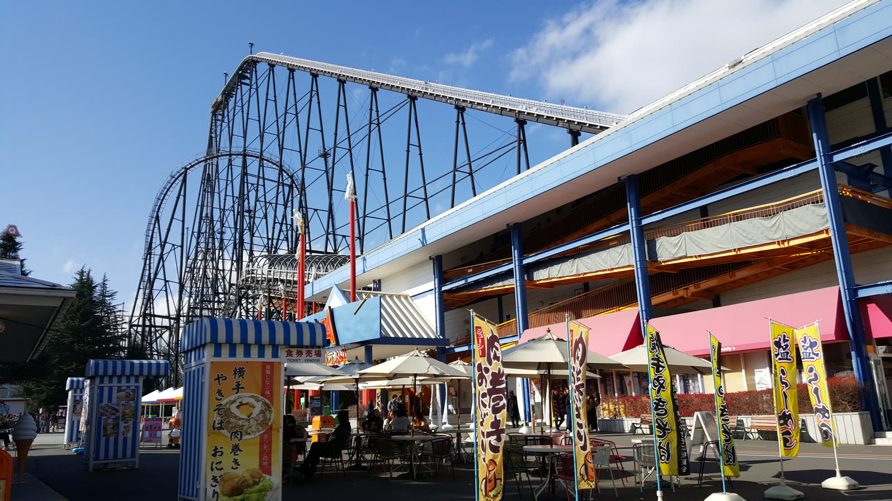

MY TRIP
여행 기록

온천·자연고베★★★★★아리마 온천 거리의 좁은 골목을 따라 김이 피어오르고, 노천탕에 몸을 담그니 겨울 추위가 싹 가셨다. 조용하고 아늑한 온천 마을.아리마 온천 노천탕고베규 만찬기타노이진칸 거리 산책
 미식·전통시장기타큐슈★★★★★간몬 해저터널을 걸어서 건너 가라토 시장에서 맛본 갓 잡은 복어
회는 잊을 수 없는 맛. 모지코 레트로의 옛 항구 정취도
인상적이었다.가라토 시장 복어회간몬 해저터널 도보 횡단모지코 레트로 야경
미식·전통시장기타큐슈★★★★★간몬 해저터널을 걸어서 건너 가라토 시장에서 맛본 갓 잡은 복어
회는 잊을 수 없는 맛. 모지코 레트로의 옛 항구 정취도
인상적이었다.가라토 시장 복어회간몬 해저터널 도보 횡단모지코 레트로 야경
 문화·휴양오키나와★★★★★에메랄드빛 바다에서 스노클링하고 슈리성에서 류큐 왕국 흔적을
봤다. 덥지만 느긋하게 돌아다니기 좋았다.슈리성 류큐 왕국 유적츄라우미 수족관오키나와 소바 한 그릇
문화·휴양오키나와★★★★★에메랄드빛 바다에서 스노클링하고 슈리성에서 류큐 왕국 흔적을
봤다. 덥지만 느긋하게 돌아다니기 좋았다.슈리성 류큐 왕국 유적츄라우미 수족관오키나와 소바 한 그릇

미식·야경오사카★★★★★도톤보리 강변을 걸으며 글리코 상 네온사인 아래서 인증샷을 찍고, 다코야키와 오코노미야키로 배를 채웠다. 밤이 되면 화려한 간판 불빛이 강물에 비쳐 한층 반짝인다.글리코 상 포토스팟도톤보리 다코야키신사이바시 쇼핑거리

후지산 뷰·테마파크도쿄★★★★★도쿄 여행 중 후지큐 하이랜드에 다녀왔다. 롤러코스터를 타는 사이사이로 후지산이 보여서 스릴과 절경을 같이 즐긴 하루였다.후지큐 하이랜드 롤러코스터후지산 전망기념품 숍 구경